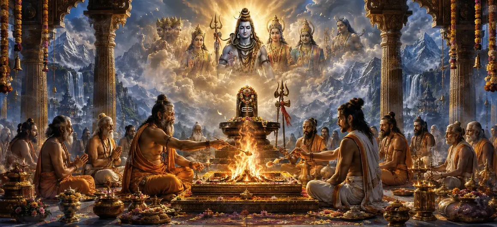

The Rite of Sacrifice
The sixty-second chapter of the Vayaviya Samhita delves deep into the sacred science of fire sacrifices (Homa) and ritual oblations dedicated to Lord Shiva.
Rishi Vayu meticulously instructs the sages on constructing the sacrificial altar, kindling the sacred fire, and offering ghee, grains, and herbs with precise Vedic mantras.
This chapter illuminates how ritual sacrifice purifies the atmosphere and burns away karmic impurities.
Chapter 62 Highlights
Sacred Fire (Agni)
Establishing and consecrating the ritual fire.
Kund Construction
Designing altars according to sacred geometry.
Pure Oblations
Offering ghee, sesame, and sacred herbs.
Mantra Chanting
Invoking Shiva through precise Svaha offerings.
Karmic Cleansing
Burning past impressions in the divine flame.
Path Forward
Exploring compulsory and optional rites in Chapter 63.
Core Topics in This Chapter
- 01Introduction to the Sacred Rite of Sacrifice (Homa)→
- 02Construction and Purification of the Sacrificial Altar→
- 03Kindling the Divine Fire and Consecration (Agni-Sthapana)→
- 04Offerings and Oblations Dedicated to Lord Shiva→
- 05The Vital Role of Vedic Mantras during Homa→
- 06Spiritual Fruits and Karmic Purification through Sacrifice→
- 07Transition to Chapter 63 (Compulsory and Optional Rites)→
Introduction to the Sacred Rite of Sacrifice (Homa)
Rishi Vayu explains that the rite of sacrifice is the bridge between human devotion and divine sustenance, channeling offerings directly to Lord Shiva.
Through Agni, the sacred fire, prayers ascend and divine grace descends.
Construction and Purification of the Sacrificial Altar
The sacrificial pit (Kund) is built following precise geometric proportions and purified with holy water and sacred darbha grass.
Every aspect of the altar reflects cosmic order and divine harmony.
Kindling the Divine Fire and Consecration (Agni-Sthapana)
The fire is ignited using sacred wood and invoked as the living mouth of the gods, ready to receive oblations with radiant flames.
The blazing flame symbolizes the awakening of inner consciousness.
Offerings and Oblations Dedicated to Lord Shiva
Pure clarified butter (ghee), sesamum seeds, grains, and fragrant herbs are offered into the fire accompanied by the chant of 'Svaha'.
Each oblation nourishes the subtle planes and fulfills the devotee's righteous aspirations.
The Vital Role of Vedic Mantras during Homa
Rishi Vayu stresses that mantras are not mere words but sound vibrations that give form and power to the ritual sacrifice.
Correct intonation ensures the direct transmission of energy to Lord Shiva.
Spiritual Fruits and Karmic Purification through Sacrifice
Performing the rite of sacrifice destroys sins, purifies the subtle body, and paves the path toward ultimate spiritual liberation.
The practitioner attains immense peace and divine protection.
Transition to Chapter 63 (Compulsory and Optional Rites)
Having expounded the rite of sacrifice in Chapter 62, Rishi Vayu prepares to narrate Chapter 63, 'Compulsory and Optional Rites'.
This next chapter will detail daily obligatory duties and special optional rites for spiritual aspirants.
Key Teachings of Chapter 62
Agni Invocation
Treating fire as the divine mouth of worship.
Sacred Geometry
Constructing precise altars for Homa.
Pure Ahuti
Offering ghee and herbs with devotion.
Vedic Resonance
Empowering sacrifice through sacred mantras.
Karma Burning
Dissolving past samskaras in holy flames.
Duty Prelude
Preparing for Chapter 63 compulsory rites.
Spiritual Reflection
The sacrificial fire is not merely physical burning, but the fiery transformation of human ego into pure devotion, ascending directly to the feet of Lord Shiva.
Living the Message of Chapter 62
Offer your daily actions, thoughts, and challenges into the inner fire of awareness as a continuous sacrifice to the divine.
Maintain purity in your intentions and let sacred discipline consume all inner negativity.
Let every breath be an oblation of love.
Key Spiritual Concepts
The prescribed scriptural procedure for conducting fire sacrifice.
The sacred establishment and consecration of the ritual fire.
The final grand oblation marking the successful completion of sacrifice.
Offering physical substances like ghee and herbs into the flame.
The spiritual power unleashed through precise Vedic sound vibrations.
The purification of karmic residue in the fire of awareness.
Chapter Summary
Vayaviya Samhita Chapter 62 details the sacred rite of sacrifice (Homa), altar construction, Agni establishment, oblations, Vedic mantra chanting, and karmic purification dedicated to Lord Shiva. This chapter paves the way for Chapter 63, 'Compulsory and Optional Rites'.
Frequently Asked Questions
1. What is the primary focus of Vayaviya Samhita Chapter 62?
Chapter 62 focuses on the sacred rite of sacrifice (Homa), sacrificial altars, oblations, and fire rituals dedicated to Lord Shiva.
2. Why is the sacrificial fire important in Shaiva rituals?
The consecrated fire acts as the divine mouth that carries oblations directly to Lord Shiva, purifying the practitioner's karma.
3. Who expounds the teachings of Chapter 62?
Rishi Vayu explains the precise procedures of fire sacrifices and ritual oblations to the assembled sages.
4. What is the next chapter for navigation after Chapter 62?
The next chapter for navigation is titled 'Compulsory and Optional Rites'.
“When ghee and pure intent are offered into the blazing fire with sacred mantras, the soul rises above bondage and bathes in the light of Shiva.”
Continue Through Vayaviya Samhita
Chapter 62 concludes The Rite of Sacrifice. Continue to Compulsory and Optional Rites.